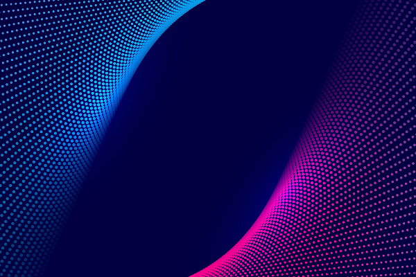

Властивості BORDER та BACKGROUND для блокових та рядкових елементів
=== 1 - БЛОК з обводкою та розмитою тінню ===
CSS властивість border використовується для встановлення стилю, ширини та кольору межі навколо елемента. виділене словоCSS властивість border використовується для встановлення стилю, ширини та кольору межі навколо елемента.
CSS властивість border використовується для встановлення стилю, ширини та кольору межі навколо елемента. виділене словоCSS властивість border використовується для встановлення стилю, ширини та кольору межі навколо елемента.

=== 2 - БЛОК рядковий з ЗОВНІШНЬОЮ обводкою outline
===
Обводка (outline) — це лінія, яка малюється навколо елемента поза його рамкою (border), не впливаючи на його розмір та положення на сторінці. Її використовують для візуального виділення, наприклад, для фокусування на елементі під час наведення на нього курсора миші або при введенні тексту в поле.
== 3 - БЛОК з ЗОВНІШНЬОЮ обводкою outline та декільками формами
тіней ==
Також виділяє окреме слово серед текстової частини
Також виділяє окреме слово серед текстової частини
=== 4 - Геометрична фігура - коло, зроблена в CSS ===
ЦЕ КНОПКА
=== 5 - Це БЛОК з "прозорою" властивістю ===
Властивість opacity у CSS визначає рівень прозорості елемента, роблячи його частково або повністю напівпрозорим. Вона приймає значення від нуля (повна прозорість) до 1 (повна непрозорість), при цьому значення за замовчуванням дорівнює 1. Важливо: opacity застосовується до всього елемента, включаючи його дочірні елементи, і впливає на його видимість.
Властивість opacity у CSS визначає рівень прозорості елемента, роблячи його частково або повністю напівпрозорим. Вона приймає значення від нуля (повна прозорість) до 1 (повна непрозорість), при цьому значення за замовчуванням дорівнює 1. Важливо: opacity застосовується до всього елемента, включаючи його дочірні елементи, і впливає на його видимість.
Властивості ФОНУ для блокових елементів
=== 6 - БЛОК з заднім ФОНОМ-ЗОБРАЖЕННЯМ,
яке позиціонується, згідно заданних координат X / Y ===
яке позиціонується, згідно заданних координат X / Y ===
=== 7 - Блок з заднім фоном - складний ГРАДІЄНТ ===
background зі значенням linear-gradient — це властивість CSS, яка використовується для створення плавного переходу між двома або більше кольорами вздовж прямої лінії, формуючи лінійний градієнт як фонове зображення. Створює фонове зображення у вигляді лінійного градієнта.
background зі значенням linear-gradient — це властивість CSS, яка використовується для створення плавного переходу між двома або більше кольорами вздовж прямої лінії, формуючи лінійний градієнт як фонове зображення. Створює фонове зображення у вигляді лінійного градієнта.
=== 8 - БЛОК з заднім фоном - ГРАДІЄНТОМ, який має м'який перехід
де TЕКСТ - поступово приховується кольором градієнтом ===
background: linear-gradient — це властивість CSS, яка використовується для створення плавного переходу між двома або більше кольорами вздовж прямої лінії, формуючи лінійний градієнт як фонове зображення. Створює фонове зображення у вигляді лінійного градієнта.
де TЕКСТ - поступово приховується кольором градієнтом ===
background: linear-gradient — це властивість CSS, яка використовується для створення плавного переходу між двома або більше кольорами вздовж прямої лінії, формуючи лінійний градієнт як фонове зображення. Створює фонове зображення у вигляді лінійного градієнта.
9 - БЛОК з повторенням одного зображення повздовж X / Y
(ПАТЕРНИ)
(ПАТЕРНИ)
11 - БЛОК з властивістю, що керує розмірами зображення
"background-size: cover"
"background-size: cover"
Побудова стрілок, різного направлення, властивостями CSS
БЛОК з виконанням домашнього завдання, згідно макету
WELCOME TO OUR
FUNITURE GALLERY
BROWSE OUR SELECTIONS
Featuring sleek designs and innovative materials that
seamlessly blend form and function.
- Unlimited product updates
- Unlimited product
- Unlimited product
- 1GB Cloud storage
- Email and community
support